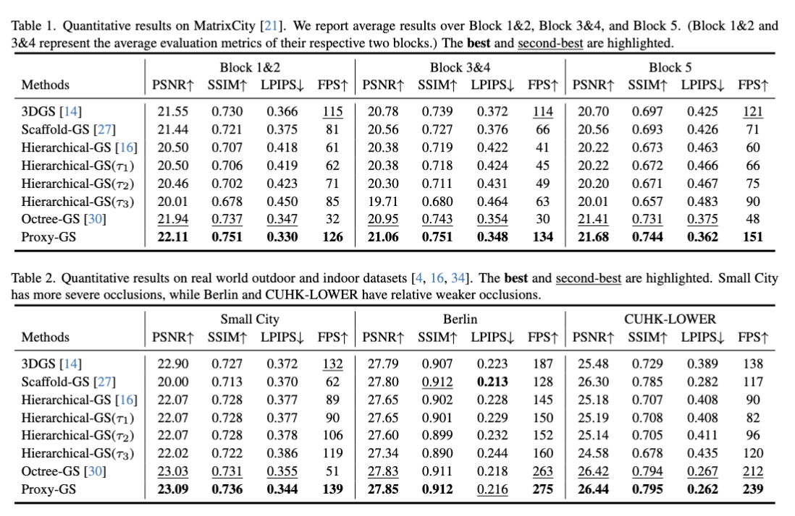
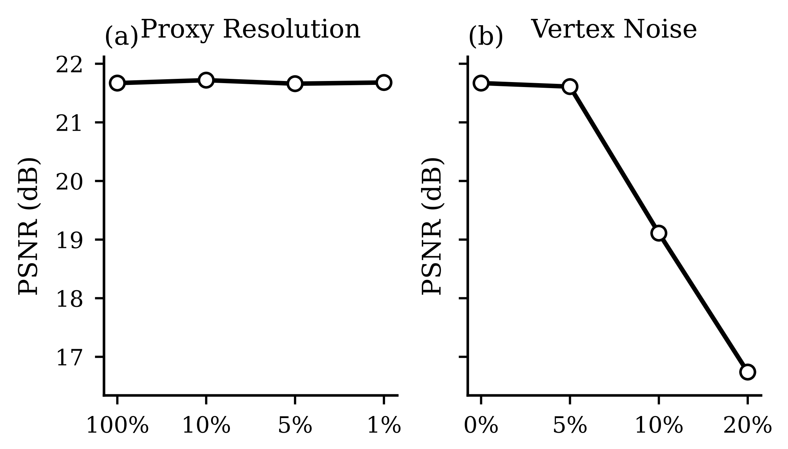
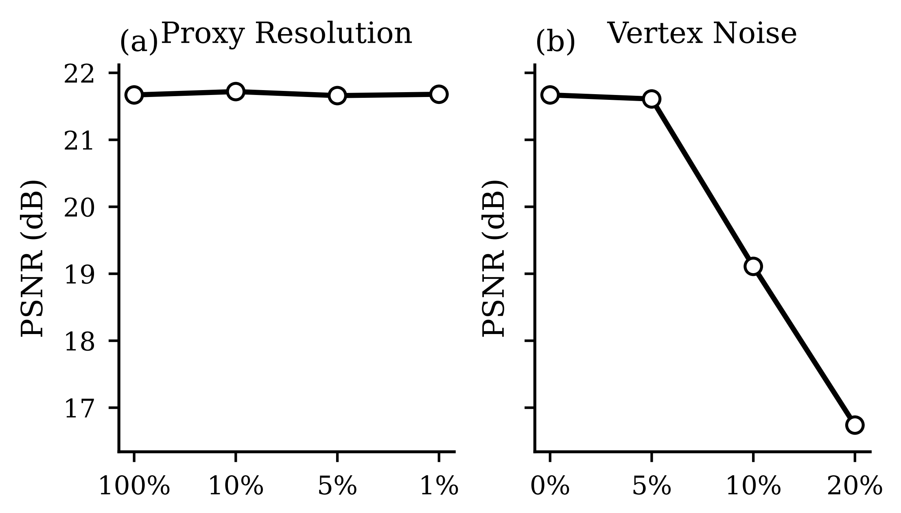

Rendering Time Distribution Across Pipeline Stages
Compared to existing baselines, Proxy-GS enables virtually cost-free depth-based occlusion culling, which in turn significantly reduces the overall rendering time in large scenes with heavy occlusions, while introducing no additional burden in smaller or less-occluded environments.


Dependency on Proxy Quality and Robustness to Proxy Imperfections
Due to the characteristics of MLP-based 3DGS, the anchors and the Gaussians generated from them typically exhibit certain spatial offsets. As a result, for Proxy-GS the underlying mesh does not need to be perfectly accurate.
 
